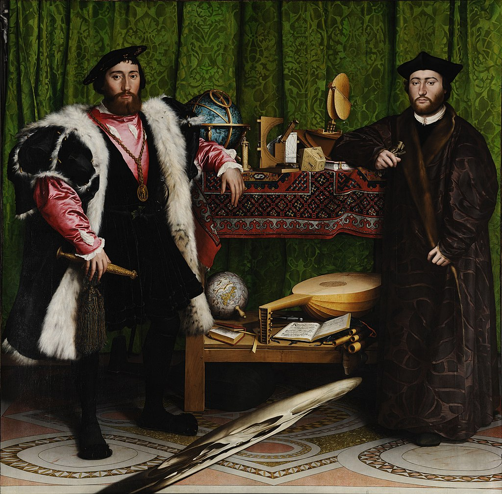

<head>
<meta charset="UTF-8" />
<meta name="keywords" content="drawing, painting" />
<meta name="description" content="drawings by Sunjy" />
<title>Sunjy</title>
<link rel="shortcut icon" type="image/x-icon" href="../../mImages/mCommon/favicon.ico" media="screen" />
<link rel="stylesheet" type="text/css" href="../../mCsses/mCommon/mCssA.css" />
<link rel="stylesheet" type="text/css" href="../../mCsses/mCommon/mCssB.css" />
<link rel="stylesheet" type="text/css" href="../../mCsses/mCommon/mCssC.css" />
<link rel="stylesheet" type="text/css" href="../../mCsses/mCommon/mCssD.css" />
<link rel="stylesheet" type="text/css" href="../../mCsses/mContent/mCssA.css" />
<link rel="stylesheet" type="text/css" href="../../mCsses/mContent/mCssB.css" />
<link rel="stylesheet" type="text/css" href="../../mCsses/mContent/mCssC.css" />
<link rel="stylesheet" type="text/css" href="../../mCsses/mContent/mCssD.css" />
</head>
<script type="text/javascript" src="../../mScripts/mContent/mContentAA.js" /></script>
<script type="text/javascript" src="../../mScripts/mContent/mContentAB.js" /></script>
<script type="text/javascript" src="../../mScripts/mContent/mContentAC.js" /></script>
<script type="text/javascript" src="../../mScripts/mContent/mContentAD.js" /></script>
<script type="text/javascript"></script> 
<script type="text/javascript">
document.write('<div class="mImgAbsolute"></div>');
/*
document.write('<p class="mFontSizeBColor" />From a white paper...</p>');
document.write('<table class="center"><tr><td>');
document.write('');
document.write('</td></tr></table>');
*/
</script>


<script type="text/javascript">
document.write('<p class="mFontSizeBColor" />The Ambassadors</p>');
document.write('<p class="mFontSizeSColor" />“The Ambassadors” by Hans Holbein, the Younger, is a masterpiece of grand size but highly detailed and full of symbolism.<br><br>Created in the Tudor Period in the same year Elizabeth I was born, this double portrait depicts two wealthy, educated, and powerful men.<br><br>On the left is Jean de Dinteville, French ambassador to England. On the right is Georges de Selve, bishop of Lavaur, who acted on various occasions as ambassador to the Emperor, the Venetian Republic, and the Holy See.<br><br>In the foreground is the distorted image of a skull, which is a classic Renaissance image with a universal message of human mortality.<br><br>When this image is viewed from a point at the extreme right of the painting, the distortion is corrected, and the skull image is evident. <br><br>Dinteville, who commissioned the painting and whose personal motto was “remember thou shalt die,” may have requested the hidden skull was a symbol of the inevitability of death.<br><br>This painting follows the traditional style of the time, showing society’s elite with books and the new instruments of science.<br><br>The objects on the top shelf include a celestial globe, a portable sundial, and various other devices used for understanding the heavens and measuring time.<br><br>On the bottom shelf are a lute, a case of flutes, a hymn book, a book of arithmetic, and a terrestrial globe.<br><br>During the same year, this painting was created, there was significant turbulent at the royal court.<br><br>Henry’s marriage to Catherine of Aragon is declared void. Henry VIII married Anne Boleyn. Cranmer declares Henry’s marriage to Anne valid.  The Pope states Henry and Cranmer excommunicated.<br><br>Anne Boleyn is crowned Queen. Anne gives birth to Elizabeth, the future queen. To mirror this turbulence, there are many interesting details and symbols in this painting:<br>•The dagger held by Dinteville, on the left, has his age 29, inscribed on the ornate scabbard.<br>•The book under Selve’s elbow has his age 25, written on its side.<br>•The book is a symbol of  Selve’s character as that of a contemplative nature.<br>•The dagger symbolizes Dinteville as a man of action.<br>•The mosaic floor is based on the medieval floor of Westminster Abbey.<br>•Under the lower table, is the left-hand prong of the 6-sided star of David.<br>•The two figures are divided almost entirely by the plumb line at the center of the top shelf.<br>•The location of Rome on the globe on the lower shelf is the approximate geometric center of the almost square painting.<br>•The lute has one of its strings that is snapped, creating a visual representation of discord, symbolizing religious disharmony during the Reformation.<br>•A crucifix is half-hidden by a green curtain in the extreme top left corner of the painting, symbolizing the division of the church.<br>•The open book of music next to the lute has been identified as a Lutheran hymnal.<br>•The book of mathematics is open on a page of divisions which opens with the word “Dividirt.”<br>•With the cylinder sundial on the upper shelf, it is possible to set up the specific date and time of day. It is 11th April 1533, which was a Good Friday at about 4 in the afternoon.<br><br>It has been argued by some art critics, that the top shelf with its celestial globe, tools of astronomy, and the hidden crucifix symbolizes the heavens and redemption.<br><br>The shelf below, with the terrestrial planet, a hymn book, the musical instruments, and the book of mathematics, represents the living world, with the opportunity for joy and endeavor.<br><br>The ground level, where the skull dominates, depicts looming death.<br></p>');
document.write('<table class="center" /><tr><td>');
document.write('<br>Created in the Tudor Period in the same year Elizabeth I was born, this double portrait depicts two wealthy, educated, and powerful men.<br><br>On the left is Jean de Dinteville, French ambassador to England. On the right is Georges de Selve, bishop of Lavaur, who acted on various occasions as ambassador to the Emperor, the Venetian Republic, and the Holy See.<br><br>In the foreground is the distorted image of a skull, which is a classic Renaissance image with a universal message of human mortality.<br><br>When this image is viewed from a point at the extreme right of the painting, the distortion is corrected, and the skull image is evident. <br><br>Dinteville, who commissioned the painting and whose personal motto was “remember thou shalt die,” may have requested the hidden skull was a symbol of the inevitability of death.<br><br>This painting follows the traditional style of the time, showing society’s elite with books and the new instruments of science.<br><br>The objects on the top shelf include a celestial globe, a portable sundial, and various other devices used for understanding the heavens and measuring time.<br><br>On the bottom shelf are a lute, a case of flutes, a hymn book, a book of arithmetic, and a terrestrial globe.<br><br>During the same year, this painting was created, there was significant turbulent at the royal court.<br><br>Henry’s marriage to Catherine of Aragon is declared void. Henry VIII married Anne Boleyn. Cranmer declares Henry’s marriage to Anne valid.  The Pope states Henry and Cranmer excommunicated.<br><br>Anne Boleyn is crowned Queen. Anne gives birth to Elizabeth, the future queen. To mirror this turbulence, there are many interesting details and symbols in this painting:<br>•The dagger held by Dinteville, on the left, has his age 29, inscribed on the ornate scabbard.<br>•The book under Selve’s elbow has his age 25, written on its side.<br>•The book is a symbol of  Selve’s character as that of a contemplative nature.<br>•The dagger symbolizes Dinteville as a man of action.<br>•The mosaic floor is based on the medieval floor of Westminster Abbey.<br>•Under the lower table, is the left-hand prong of the 6-sided star of David.<br>•The two figures are divided almost entirely by the plumb line at the center of the top shelf.<br>•The location of Rome on the globe on the lower shelf is the approximate geometric center of the almost square painting.<br>•The lute has one of its strings that is snapped, creating a visual representation of discord, symbolizing religious disharmony during the Reformation.<br>•A crucifix is half-hidden by a green curtain in the extreme top left corner of the painting, symbolizing the division of the church.<br>•The open book of music next to the lute has been identified as a Lutheran hymnal.<br>•The book of mathematics is open on a page of divisions which opens with the word “Dividirt.”<br>•With the cylinder sundial on the upper shelf, it is possible to set up the specific date and time of day. It is 11th April 1533, which was a Good Friday at about 4 in the afternoon.<br><br>It has been argued by some art critics, that the top shelf with its celestial globe, tools of astronomy, and the hidden crucifix symbolizes the heavens and redemption.<br><br>The shelf below, with the terrestrial planet, a hymn book, the musical instruments, and the book of mathematics, represents the living world, with the opportunity for joy and endeavor.<br><br>The ground level, where the skull dominates, depicts looming death.<br>" />');
document.write('</td></tr></table>');
</script>


